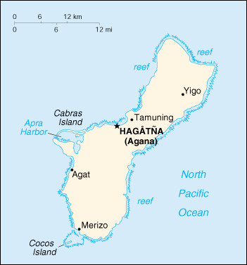

![[Country Flag of Guam]](../flags/gq-lgflag.jpg)
| Guam |
|
         |  | |
| Introduction |
Background: Guam was ceded to the US by Spain in 1898. Captured by the Japanese in 1941, it was retaken by the US three years later. The military installation on the island is one of the most strategically important US bases in the Pacific.
| Geography |
Location: Oceania, island in the North Pacific Ocean, about three-quarters of the way from Hawaii to the Philippines
Geographic coordinates: 13 28 N, 144 47 E
Map references: Oceania
Area:
total:
541.3 sq km
land:
541.3 sq km
water:
0 sq km
Area - comparative: three times the size of Washington, DC
Land boundaries: 0 km
Coastline: 125.5 km
Maritime claims:
exclusive economic zone:
200 nm
territorial sea:
12 nm
Climate: tropical marine; generally warm and humid, moderated by northeast trade winds; dry season from January to June, rainy season from July to December; little seasonal temperature variation
Terrain: volcanic origin, surrounded by coral reefs; relatively flat coralline limestone plateau (source of most fresh water), with steep coastal cliffs and narrow coastal plains in north, low-rising hills in center, mountains in south
Elevation extremes:
lowest point:
Pacific Ocean 0 m
highest point:
Mount Lamlam 406 m
Natural resources: fishing (largely undeveloped), tourism (especially from Japan)
Land use:
arable land:
11%
permanent crops:
11%
permanent pastures:
15%
forests and woodland:
18%
other:
45% (1993 est.)
Irrigated land: NA sq km
Natural hazards: frequent squalls during rainy season; relatively rare, but potentially very destructive typhoons (especially in August)
Environment - current issues: extirpation of native bird population by the rapid proliferation of the brown tree snake, an exotic species
Geography - note: largest and southernmost island in the Mariana Islands archipelago; strategic location in western North Pacific Ocean
| People |
Population: 154,623 (July 2000 est.)
Age structure:
0-14 years:
34.9% (male 28,233; female 25,727)
15-64 years:
59.09% (male 48,126; female 43,238)
65 years and over:
6.01% (male 4,680; female 4,619) (2000 est.)
Population growth rate: 1.67% (2000 est.)
Birth rate: 26.19 births/1,000 population (2000 est.)
Death rate: 4.16 deaths/1,000 population (2000 est.)
Net migration rate: -5.35 migrant(s)/1,000 population (2000 est.)
Sex ratio:
at birth:
1.14 male(s)/female
under 15 years:
1.1 male(s)/female
15-64 years:
1.11 male(s)/female
65 years and over:
1.01 male(s)/female
total population:
1.1 male(s)/female (2000 est.)
Infant mortality rate: 6.83 deaths/1,000 live births (2000 est.)
Life expectancy at birth:
total population:
77.78 years
male:
75.51 years
female:
80.37 years (2000 est.)
Total fertility rate: 3.96 children born/woman (2000 est.)
Nationality:
noun:
Guamanian(s)
adjective:
Guamanian
Ethnic groups: Chamorro 47%, Filipino 25%, white 10%, Chinese, Japanese, Korean, and other 18%
Religions: Roman Catholic 85%, other 15% (1999 est.)
Languages: English, Chamorro, Japanese
Literacy:
definition:
age 15 and over can read and write
total population:
99%
male:
99%
female:
99% (1990 est.)
| Government |
Country name:
conventional long form:
Territory of Guam
conventional short form:
Guam
Data code: GQ
Dependency status: organized, unincorporated territory of the US with policy relations between Guam and the US under the jurisdiction of the Office of Insular Affairs, US Department of the Interior
Government type: NA
Capital: Hagatna (Agana)
Administrative divisions: none (territory of the US)
Independence: none (territory of the US)
National holiday: Guam Discovery Day (first Monday in March) (1521); Liberation Day, 21 July (1944)
Constitution: Organic Act of 1 August 1950
Legal system: modeled on US; US federal laws apply
Suffrage: 18 years of age; universal; US citizens, but do not vote in US presidential elections
Executive branch:
chief of state:
President William Jefferson CLINTON of the US (since 20 January 1993); Vice President Albert GORE, Jr. (since 20 January 1993)
head of government:
Governor Carl GUTIERREZ (since 8 November 1994) and Lieutenant Governor Madeleine BORDALLO (since 8 November 1994)
cabinet:
executive departments; heads appointed by the governor with the consent of the Guam legislature
elections:
US president and vice president elected on the same ticket for a four-year term; governor and lieutenant governor elected on the same ticket by popular vote for four-year terms; election last held 3 November 1998 (next to be held NA November 2002)
election results:
Carl GUTIERREZ reelected governor; percent of vote - Carl GUTIERREZ (Democrat) 53.2%, Joseph ADA (Republican) 46.8%
Legislative branch:
unicameral Legislature (15 seats; members are elected by popular vote to serve two-year terms)
elections:
last held 3 November 1998 (next to be held NA November 2000)
election results:
percent of vote by party - NA; seats by party - Republican 12, Democratic 3
note:
Guam elects one delegate to the US House of Representatives; election last held 3 November 1998 (next to be held NA November 2000); results - Robert UNDERWOOD was reelected as delegate; percent of vote by party - NA; seats by party - Democratic 1
Judicial branch: Federal District Court (judge is appointed by the president); Territorial Superior Court (judges appointed for eight-year terms by the governor)
Political parties and leaders: Democratic Party (party of the Governor) [leader NA]; Republican Party (controls the legislature) [leader NA]
International organization participation: ESCAP (associate), Interpol (subbureau), IOC, SPC
Diplomatic representation in the US: none (territory of the US)
Diplomatic representation from the US: none (territory of the US)
Flag description: territorial flag is dark blue with a narrow red border on all four sides; centered is a red-bordered, pointed, vertical ellipse containing a beach scene, outrigger canoe with sail, and a palm tree with the word GUAM superimposed in bold red letters; US flag is the national flag
| Economy |
Economy - overview: The economy depends mainly on US military spending and on tourist revenue. Over the past 20 years, the tourist industry has grown rapidly, creating a construction boom for new hotels and the expansion of older ones. More than 1 million tourists visit Guam each year. The industry suffered a setback in 1998 because of the continuing Japanese recession; the Japanese normally make up almost 90% of the tourists. Most food and industrial goods are imported. Guam faces the problem of building up the civilian economic sector to offset the impact of military downsizing.
GDP: purchasing power parity - $3 billion (1996 est.)
GDP - real growth rate: NA%
GDP - per capita: purchasing power parity - $19,000 (1996 est.)
GDP - composition by sector:
agriculture:
NA%
industry:
NA%
services:
NA%
Population below poverty line: NA%
Household income or consumption by percentage share:
lowest 10%:
NA%
highest 10%:
NA%
Inflation rate (consumer prices): 4% (1992 est.)
Labor force: 65,660 (1995)
Labor force - by occupation: federal and territorial government 31%, private 69% (trade 21%, services 33%, construction 12%, other 3%) (1995)
Unemployment rate: 2% (1992 est.)
Budget:
revenues:
$524.3 million
expenditures:
$361.4 million, including capital expenditures of $NA (1995)
Industries: US military, tourism, construction, transshipment services, concrete products, printing and publishing, food processing, textiles
Industrial production growth rate: NA%
Electricity - production: 800 million kWh (1998)
Electricity - production by source:
fossil fuel:
100%
hydro:
0%
nuclear:
0%
other:
0% (1998)
Electricity - consumption: 744 million kWh (1998)
Electricity - exports: 0 kWh (1998)
Electricity - imports: 0 kWh (1998)
Agriculture - products: fruits, copra, vegetables; eggs, pork, poultry, beef
Exports: $86.1 million (f.o.b., 1992)
Exports - commodities: mostly transshipments of refined petroleum products, construction materials, fish, food and beverage products
Exports - partners: US 25%
Imports: $202.4 million (c.i.f., 1992)
Imports - commodities: petroleum and petroleum products, food, manufactured goods
Imports - partners: US 23%, Japan 19%, other 58%
Debt - external: $NA
Economic aid - recipient: $NA; note - although Guam receives no foreign aid, it does receive large transfer payments from the general revenues of the US Federal Treasury into which Guamanians pay no income or excise taxes; under the provisions of a special law of Congress, the Guam Treasury, rather than the US Treasury, receives federal income taxes paid by military and civilian Federal employees stationed in Guam
Currency: 1 United States dollar (US$) = 100 cents
Exchange rates: US currency is used
Fiscal year: 1 October - 30 September
| Communications |
Telephones - main lines in use: 82,669 (1997)
Telephones - mobile cellular: 55,000 (1998)
Telephone system:
domestic:
NA
international:
satellite earth stations - 2 Intelsat (Pacific Ocean); submarine cables to US and Japan
Radio broadcast stations: AM 4, FM 7, shortwave 0 (1998)
Radios: 221,000 (1997)
Television broadcast stations: 5 (1997)
Televisions: 106,000 (1997)
Internet Service Providers (ISPs): 5 (1999)
| Transportation |
Railways: 0 km
Highways:
total:
885 km
paved:
675 km
unpaved:
210 km
note:
there is another 685 km of roads classified non-public, including roads located on federal government installations
Ports and harbors: Apra Harbor
Merchant marine: none (1999 est.)
Airports: 5 (1999 est.)
Airports - with paved runways:
total:
4
over 3,047 m:
2
2,438 to 3,047 m:
1
914 to 1,523 m:
1 (1999 est.)
Airports - with unpaved runways:
total:
1
under 914 m:
1 (1999 est.)
| Military |
Military - note: defense is the responsibility of the US
| Transnational Issues |
Disputes - international: none